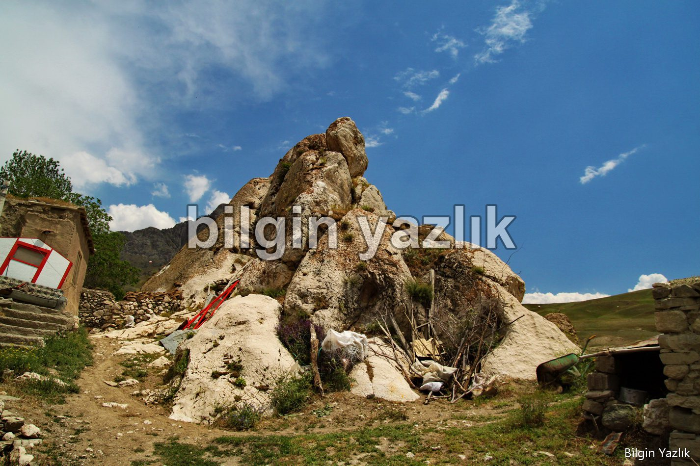
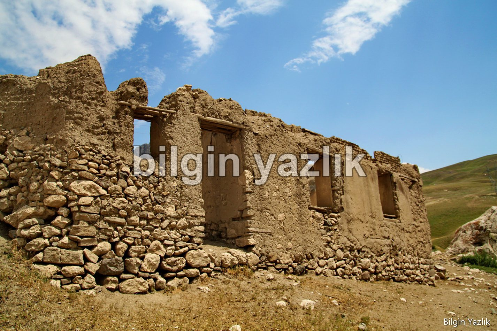
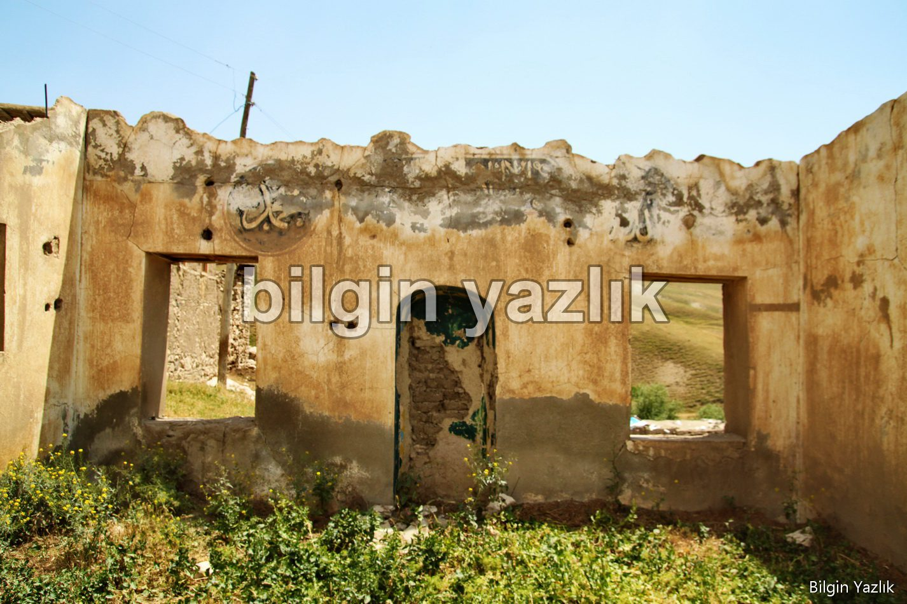
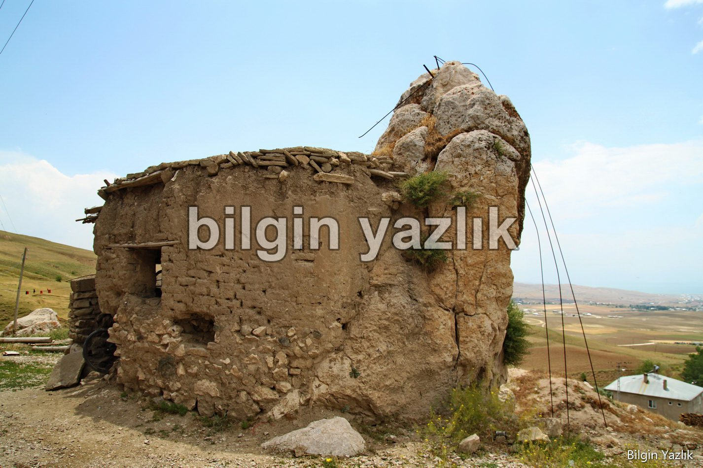

Van Gölü Havzası · 5 Temmuz 2020
Kevenli (Şuşanıs) Köyü
Bugünkü adı ile Kevenli, yerel halkın kullandığı adıyla Şuşanıs (aslı Şuşants) köyü Van’ın doğusunda Erek dağının eteğinde şehire kuş bakışı bakan bir noktada kuruludur.
- yy’da Van’da hüküm sürmüş olan kral I. Gagik Ardzruni’nin kızı olan Şuşan (zambak) burada ünlü bir manastır inşa etmiştir. Şuşants kelimesi ise Ermenice Zambaklı anlamına gelmektedir.
Şehir merkezinden köye bakan dikkatli gözler uzaktan piramiti andıran bir kayanın bu köyün içerisinde yer aldığını görürler. Aşağıda aslında sıradan bir kaya olan bu kayanın fotoğraflarını görebilirsiniz.
Köyün terk edilmiş eski camisi de görülmeye değer yerler arasında yer alıyor.




Bu yazı taliyol arşivinden taşınmıştır. · özgün kayıt